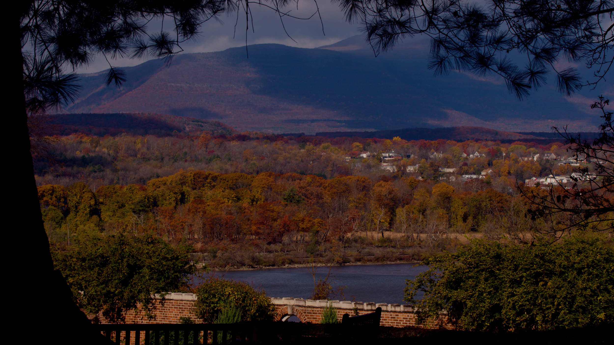
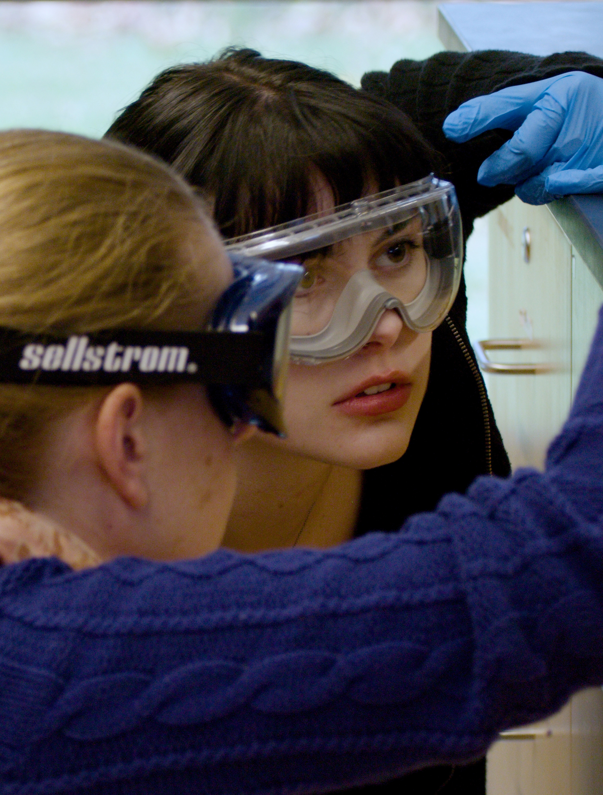
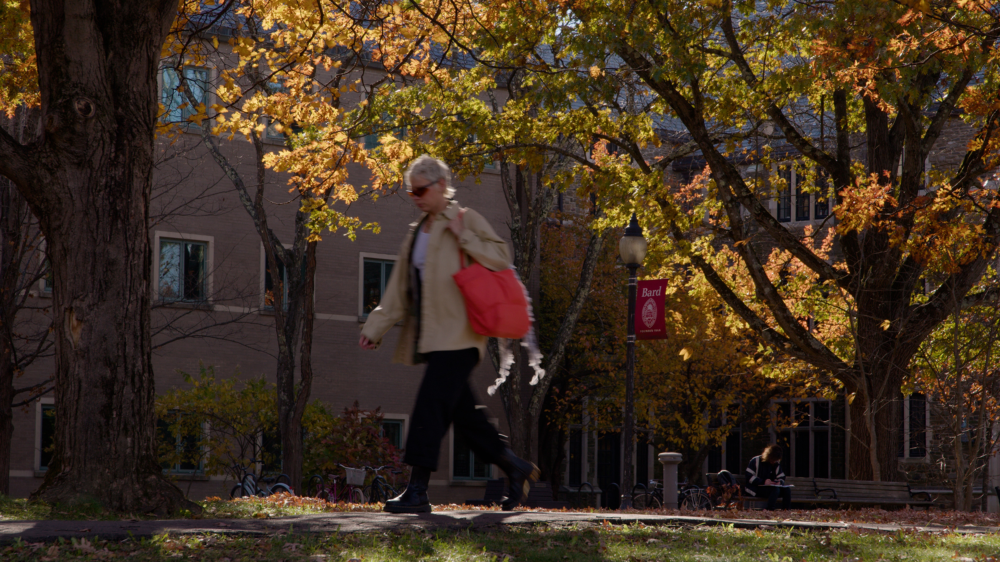
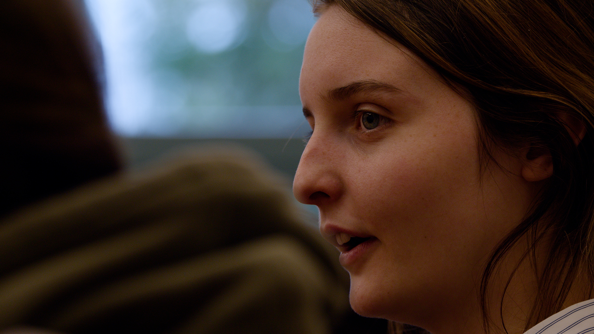
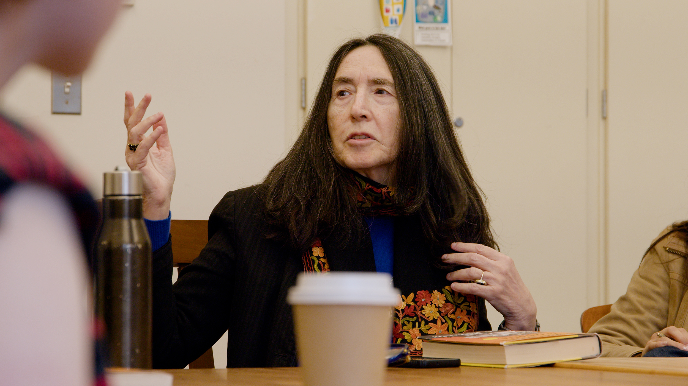
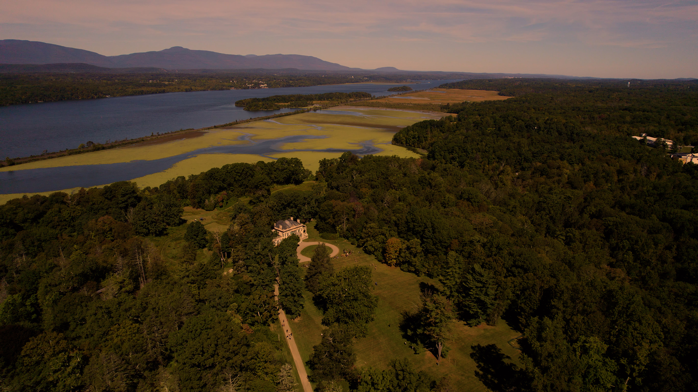
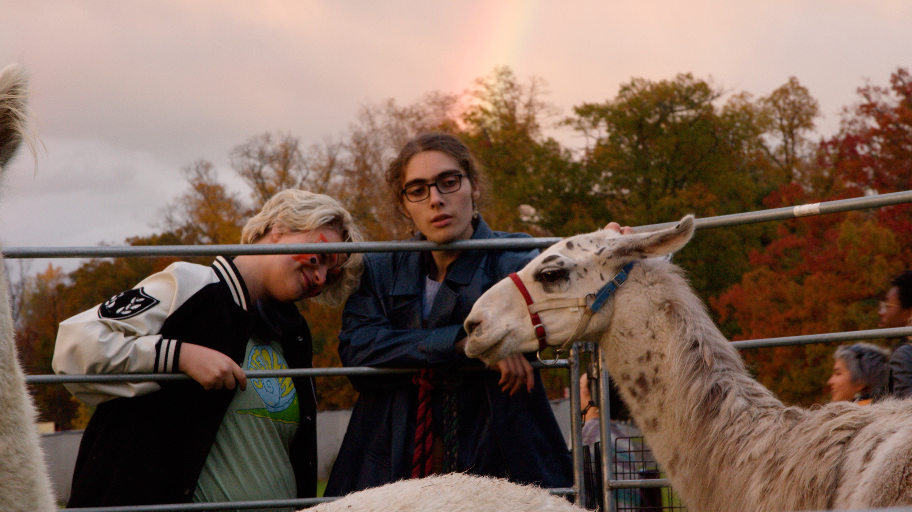

You arrive not knowing exactly who you're going to become.
SCROLL TO BEGIN ↓
01
A different kind
of beginning.
When you arrive at college, there is a strange moment before everything begins.
You have your suitcase, your room key, a schedule you don't quite understand,
and the feeling that everyone around you somehow knows what they're doing.
You don't know the campus yet. You don't know which buildings matter,
which paths lead to the river, or which people will still be part of your life
four years from now. Most of all, you don't yet know who you're going to become.

View of the Catskill Mountains from Blithewood Garden.
At many colleges, the person standing at the front of your first classroom
may be a graduate student—someone who is learning the institution at almost
the same time you are. At Bard, from the beginning, the person teaching you
is a professional in their field: a scholar, scientist, artist, writer,
performer, or researcher who is actively engaged in the work they're asking
you to explore.
You don't spend your first years waiting for your education to become serious.
It is serious from the moment you walk through the door.
You don't spend your first years waiting
for your education to become serious.
It is serious from the moment you walk through the door.
03
The work begins
before you're ready.
BARD / IT'S DIFFERENT
PLAY / PAUSE
That changes the feeling of a classroom. With more than eighty percent of
Bard's classes enrolling fewer than twenty students, you don't disappear
into the back row. There isn't much of a back row.
You sit around a table, across from the people you're learning with,
and the conversation becomes part of the education. Your professor hears
what you say, notices when you change your mind, remembers the question
you asked last week, and pushes you when you settle for an easy answer.
You begin to understand that being educated isn't simply about absorbing
information. It's about having your ideas tested until they become stronger,
stranger, more precise—or until you're willing to let them go.

The conversation becomes part of the education.
And then there is the person who is there for the parts of college that don't
fit neatly inside a syllabus. Before you've even figured out which way is
north, you're paired with a faculty advisor. Not a portal or an algorithm,
but a person who knows your name.
Over time, that person comes to know more than your course schedule.
They learn what you're curious about, what you're struggling with,
what you want to try next. They see the arc between the student who arrives
with tentative questions and the senior who is beginning to imagine a life
beyond the campus.

Space to think.
02
Before you're ready.
That transformation begins earlier than you might expect. At Bard, you don't
have to spend your first years standing outside the real work, waiting until
you're experienced enough to participate.
You can find yourself in a laboratory, on a stage, in a studio, or deep
inside a research project while you're still discovering what you're capable
of. You may begin with something small—a question that won't leave you alone,
a piece of music you want to perform, an experiment that doesn't work the way
you expected.
But then someone takes your question seriously. Someone gives you the tools
to pursue it. And suddenly you're not just studying what other people have
discovered. You're making something of your own.
BARD / MAKING

Your voice gets heard.

Professor Francine Prose.
The place itself becomes part of that process. Bard's thousand-acre campus
sits in the Hudson Valley, with the river and the Catskill Mountains shaping
the landscape around you.
There are moments when the setting feels almost impossibly expansive:
walking across campus in the early morning, looking out toward the mountains,
sitting somewhere outside with a book, letting a conversation stretch long
after you meant to leave.
The landscape gives you room to think. And when you want the intensity of
the city, New York is only ninety minutes away by train. The campus can feel
intimate without feeling isolated, connected to a larger cultural world while
still giving you the space to find your own voice.

The landscape gives you
room to think.
That combination begins to change what you expect from college. Inspiration
isn't reserved for a special lecture or an important guest.
It can appear in an ordinary conversation with a professor, in a rehearsal
that suddenly comes together, in an argument with a classmate that forces you
to reconsider something you've always believed.
It can be found in the work happening around you—in classrooms, laboratories,
studios, theaters, libraries, and in the landscape itself. You begin to
realize that learning doesn't have to be confined to the hours printed
on your schedule.
BARD / THE PLACE
03
Somewhere along
the way.
And somewhere along the way, without quite noticing it,
you become different from the person who arrived.
The first-year student who wasn't sure what belonged on the schedule becomes
the student who knows which questions are worth pursuing.
The person who was nervous about speaking in a seminar begins to lead the
conversation. The tentative idea becomes a piece of research, a performance,
a project, a discovery.
You learn not simply to have opinions, but to examine them. Not simply to
follow instructions, but to make choices. Not simply to find the right answer,
but to become comfortable asking a better question.

You arrive with questions.
You leave knowing
which questions are worth pursuing.
Eventually, four years have passed. You leave Bard for a career, graduate
school, a fellowship, or a path you couldn't have described when you first
arrived.
More than ninety percent of Bard graduates go directly into careers, graduate
programs, or fellowships such as the Fulbright, Watson, and Rhodes.
But perhaps the more important preparation is harder to put on a résumé.
It's the confidence that comes from having been taken seriously.
It's the ability to enter an unfamiliar room and contribute something of
your own. It's knowing how to work with people who disagree with you, how
to pursue an idea before you know where it will lead, and how to keep going
when the answer doesn't come easily.
04
What happens
when you're given room.
Because the real difference isn't simply what you learn at Bard.
It's what happens when a place gives you four years to be curious,
to experiment, to fail, to make things, to change your mind, and
to discover that your ideas are worth pursuing.
You arrive not knowing exactly who you're going to become.
And, little by little, surrounded by people who take your questions
seriously, you begin to find out.